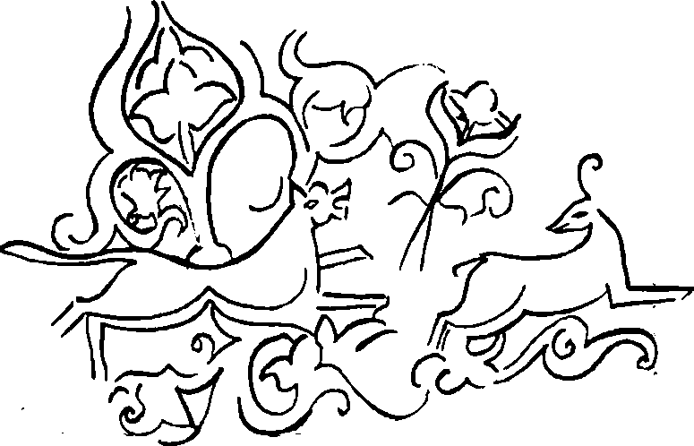

Îdil’i izleye izleye güneye inmeye devam ettim. Aslında İdil’i geçip batı yönüne dönmem gerekiyordu ama ırmağın darlığı yüzünden bu yakada kaldım. “Maşiah Tengere”nin bunalan bunlular ile azıtmış azgınları azıtmasından bir gün sonra, İdil’in iyice genişleyerek yayıldığı bir geçide kulanımı teptim. Mırın kırın etti ama kendini suya vurdu kulanım. Kaftanım ıslanmasın diye sol elimle başımın üstünde tutarak geçtim İdil Suyu’nu bir yaz günü, tek başıma. Büyük atalarımdan Atıl Han da acaba tam bu noktadan mı geçmişti İdil’i? Kim bilir? Ünüm ise benden önce geçmişti bu yakaya.
Buraların budunu da yine dilini konuştuğum, kimlerden olduğunu sorup soruşturduğum, atalarını bulup buluşturduğum kendi budunum, kendi Oğuzum idi. Fakat batıya doğru ilerledikçe “Bizler Oğuz değil Hazarız’’ demeye başladılar.
İlk kez o Oğuzlardan duymuştum. Herkese sordum, ne demekmiş “Hazar” diye. Pek bilen çıkmadı. Yavaş yavaş başka bir ulu ırmağa, Ten Irmağı’na yaklaşıyordum. Levedya’dan gelip Etelköz’e gitmekte olan bir koca ile tanıştım yolda. Beraber epey yol yoldaşlığı ettik. Onogurların Kun boyundan, Urona Taş adlı bu kocaya göre pek bir şey demek değilmiş Hazar. Güney’deki Apa Urum’un dilinde “Kağan” ile aynı anlama geliyormuş. Onlar “kayşar” diyormuş, bizimkiler Hazar! Yani “kağan kağan” der gibi bir şey. Hep yaptığımız bir şey olduğu için, Türkçe delinin yanına Tatça divaneyi, yine Türkçe doğrunun yanına yine Tatça dürüstü koyduğumuz için, bana inanılır geldi. Herhalde herifler ile konuşurken eşitliği sağlamak kaygısından olacak: Bizim kağanımız sizin kaysarınız ile aynı! Urona pek yanaşmadı ama belki kasmak kökünden de gelebilirmiş adları: Kasar. Baskı yapar, sıkıştırır, anlamları varmış bu sözcüğün. Kasıp kavurur deriz ya. Haa, bir de yollarda izlerde karşılaştığım bir Bayat delikanlısının açıklaması var ki, yalnızca gülünç olduğu için anlatıyorum: Bu Hazarlar, kaz kafalı bir atadan türemişlermiş. Kaz-er! Böyle konuşa konuşa Urona Taş ile tekrar kuzeye tırmandık. Güya gideceğimiz yer aynıydı. Bir sabah uyandığımda kocayı göremedim. Nereye gitmişti? Gizli bir el yalnızca şu Hazar meselesini açıklasın diye mi karşıma çıkarmıştı onu? Bilemedim. Çizmelerimin yürüdüğünü görünce bildim!
Ten Irmagı’nın, eteklerinde geniş bir yay çizerek doğuya döndüğü alçakça tepenin üstüne çıktığımda şaşkınlıktan küçükdilimi yutayazdım! Karşımda, temmuz güneşinin altında pırıl pırıl parlayan dört köşe kuleleri, kulelerin ortasında ışıl ışıl yanan tek bir kubbesi ile, sarı taş ve kızıl tuğladan yapılma ulu mu ulu bir şar vardı. “Yok, bunu kişioğlu yapamaz! Yeruşalayim yapılırken yarısı buraya mı düştü?” diye akıl yürütürken, birden yoksul başıma dank etti. Varmıştım. Ermiştim. Gelmiştim sonunda. “Nahlat avot... Nahlai avol... Sarkel... Sarkel” diyerek o tümseğin üstünde hıçkıra hıçkıra ağlamaya başladım. Sonra sanki Maşiah ben değilmişim, başkası imiş de benim bu halime acıyarak sevecen ellerini alnıma koymuş, saçlarımı karıştırmışçasına sustum.
Sarkel! Bütün bir Batı Bozkırının hakkında konuştuğu, sevdiği veya kızdığı, yıkmak veya onarmak istediği, taşına yüz sürmek veya taş zindanlarından kurtulmak dilediği, kin tuttuğu veya bel bağladığı, demir kapılarında güldüğü veya ağladığı gizemli kent! Büyük Batı Hanı, Hanlar Hanı Bayındır Kohen’in Batı’daki en sağlam kalesi. Bozkırın kilidi, Hazar ülkesinin gözbebeği ve imrencesi. Yapılışında Apa Urum’dan ustaların akıl yorduğu Sarkel! Bozkır’ın incisi Sarkel! Acunun eşiği Sarkel! Her taşında her tuğlasında kurucu ataların adlarının yazılı olduğu söylenen kent! Doğudaki İdil kentinin yılmaz bekçisi, yalnız İdil’in değil Hanmalık’ın, Kutluğ’un, Semender’in, Balancar’ın, Sarğşın’ın eşiği Sarkel! Diyorlar ki; Bağdad Halifesi’nden, Urus, Peçenek ve Macar yağmacılarından alman tutsakların döktüğü kan ile ter kadar altın dökmüş o zamanın Bayındır Han’ı sen yapılırken Sarkel! Senin için ne deseler azdır Sarkel! Senin kışın yaz, yazın da yazdır Sarkel! Kuzeydeki Kuz Deniz’den, daha ötedeki Buz Deniz’den, güneydeki Akdeniz’den, daha berideki Karadeniz’den, acunun yedi denizinden gemiler gelir sana Ten üstünde. Güneydoğudaki Arapeli’nden, güneydeki Apa Urum’dan, kuzeydeki Uruseli’nden, kuzeydoğudaki Bulgar’dan, evet evet, sizin bildiğiniz batıdaki Bulgar değil, doğudaki Bulgar’dan, batıdaki Frank’tan argışlar ulaşır senin sarp bir dağın eteklerine benzer eteklerine.
Az daha kol kopuzumu indirip bir Sarkel güzellemesi döktürüyordum ki arkamdan bir tıpırtı, bir koşuşturma işittim. Dönüp bakınca büyük bir ak sığının bana doğru koştuğunu gördüm. “Yok artık, bunun da sırtına binilecek değil ya” diye düşünerek yayımı dengin içinden çektim, okumu koydum. İverken taş uçlu oklardan birini koymuşum. Gerdim. Bunalmış hayvan tam önümden geçerken bıraktım. Tanrı kargayası, eşşeklerin Tanrısından bulası kulanım kıpırdanıp deprenmesin mi? Okum, sığının sırtından yüreğine inecek yerde, gidip arka bacağındaki sinire dokunmadı mı? Sinirlenen sığın önüm sıra tepetaklak tekerlendi. Bir damla kanı bile akmamıştı. “Ooo iyiye işaret! Dur şunu Köktanrı’ya sunayım, Sarkel’e ulaştığım için bir sağ ol diyeyim” dedim. Urgam yoktu yanımda ama urgan vardı. Attım ve yakaladım sığını. Kulandan indim, yerdeki sığının döşüne bindim. Yanağımda salt bu iş için gezdirdiğim kara yanardağ taşından keskin bıçağımı davarın geniş göğsüne daldırdım, uzunca bir yarık yaptım. Sağ elimi yarığa soktum, sığının ılık kanı bileğime kadar çıktı. Biraz arandıktan sonra hızlı hızlı atan iri yüreğini buldum. Kavradım, var gücümle sıktım ve çektim. Sığının dört ayağı birden kaskatı gerildi. Sığın olması gerektiği gibi, gövdesine demir değmeksizin, taş ok ve taş bıçak kullanılarak Köktanrı’ya ulaştı... Yoksulun irileşen gözlerinden yansıyan beyaz bir atlı görünce başımı kaldırıp baktım.
İri ak atının üstünde ak giysili bir kızdı. Yirmi yaşında ya var ya yoktu. Başında kıyıları beyaz tavşan kürküyle çevrilmiş ak börkü, ince ak geyik derisinden yeleği ve pantolonu, yine yumuşak ak deriden çizmeleri vardı. İnce, güzel burnu, gri gözleri, kuğu boynu, börkünün altından salınan kestane rengi saçlarıyla sevimli, hoş bir kızdı.
“Rav Maşiah, Köktanrı’ya adak mı sunuyor? Doğu’da yol yordam böyle mi hâlâ?” diye sorunca hakkımda bir şeyler duyduğunu anladım.
“Kim demiş ki ben Maşiah’ım?”
Yanlış soruydu. Kız, adını bildiğim tüm boyları ve üstüne de daha önce duymadığım “Sabirleri, Avarları, Kabarları,” ıvırlan zıvırları mutlu bir yüzle saydı. Bunların hepsi, Doğu’dan bir eşek üstünde gelecek “kurtarıcımızdan” söz ediyormuş. Sordum:
“Kimden kurtaracağım?”
Pek alaylı gülümsedi:
“Bizden! Bizi bizden kurtaracaksın! Birbirimizi yiyoruz bu sıralarda.”
Bir şey demeden işime baktım. Kıl gibi keskin yanardağ taşıyla sığını dört bölüme ayırdım. Her parçayı yanında bir bacakla birlikte, bir yöne gelecek şekilde tepenin dört yanına koydum. Başını batıya, elime aldığımda hâlâ titreyen yüreği ise doğuya koydum. Ak kız çekinerek sordu:
“Maşiah! ‘Aklım Batı’da olsa da yüreğim Doğu’dadır’ mı demek bu?”
Amcamdan gördüğüm bir şeydi. Anlamı üzerine hiç düşünmemiştim. Bu çok bilir kıza bir şey söylemek gerekti. Alaya vurdum:
“Yok, Batı kalpsizdir, Doğu akılsızdır, kime ne uyarsa onu oraya koydum!”
Bazen uçuk bir maviye dönen, bebeklerinin çevresinde bir sürü minik siyah benek olan gri gözlerini gözlerime dikti:
“Oysa bu ikisi bir zamanlar aynı gövdedeydi, kalp gidince beyin de gitti. Onları taşıyan bacaklar ise dört bir yana dağıldı...” Ben tamamladım:
“...son ise bir bacaktan başladı.”
Bu işi bitirince kanlı ellerimi Ten Suyu’nda yıkamaya gittim. Döndüğümde Akkız’ı beti benzi solmuş buldum. Güçlükle:
“Boşuna saklama, sen Maşiah’sın. ‘Doğu’dan bir eşek üstünde gelecek ve Ten lrmağı’nda kanlı ellerini yıkayacak’ diye açık açık söylüyor Tora’mızda. Olam ha-Beriah’ın (Yaratılış Acunu) çağı geçti biliyorum. Tözü veya ruhu olmazsa şu sığın da olmazdı. Olam ha-Yetzirah (Oluşum Acunu) çoktan gerçekleşti, yoksa şu sığın ete ve kemiğe bürünmezdi. Şimdi Olam ha-Asiyah’ın (Devinim Acunu) çağı mıdır rav? Gerçek yaşamdan önceki son aşamalarda mıyız? Cennet’in boyunduruğuna hazırlanalım mı rav?”
Bizim “Töre” sözümüzü biraz tuhaf söylüyordu ama hemen tanıdım. Diğer söylediklerini anlamadım bile. Bildiğim tek şey, bunların bizim Orhon kıyılarındaki kutsal dilimizi andırdığıydı. Yine de bir şey söylemiş olmak için,
“Töre’de söyleniyorsa, bunu bilen herkes bu yaptıklarımı yapabilir. Ne var bunda?” dedim.
Söylediklerim Akkız üzerinde sandığımdan daha büyük bir etki yaptı. Gözlerindeki korku azaldı.
“Belki de haklısın. Bu son olanlar hepimizi çok etkiledi. Sonra bir Maşiah’ın öykülerini dinlemeye başladık. Sancılı çocukların acısını dindiriyor, körün gözlerini açıyor, kötürümü yürütüyormuş. Tek başına seksen gemilik bir Urus kolunu durdurmuş. Bazı dokunduklarını hemen öldürüyor, bazı dokunduklarına yeni bir yaşam bağışlıyormuş. Bunların içinde önce öldürüp sonra dirilttiği biri bile varmış. Kurtardığı binlerce tutsak, çocuklarının başına yemin ediyor... Seni bir an o sandım... sonra... sonra...”
Bir türlü “leş gibi kokan, pis ve yoksul bir aylaksın” diyemediği için,
“...sonra sağ kafayla düşününce senin O olamayacağını anladım. Doğu’dan gelmek, eşeğe binmek yetmez. Öküze, geyiğe bile binen boylar varmış. Şey de olmak gerekir...” dedi, ikircikli bir biçimde durdu. Sanki daha söyleyecekleri vardı ama aklına bir şey geldiği için durakladı:
“Yiğit adını bağışlamadın. Adını değil bana! Yiğit adını saklamaz, ele güne karşı ayıp olur!” diye, söylenmesi gelenek olan sözleri söyleyerek adımı sordu. Hiç sormayacak sanıyordum.
Kasım kasım kasılarak tüm bozkır yolculuğu sırasında kendime yineleye yineleye olgunlaştırdığım tanıtma türkümü okudum. Akkız’ın, “Tengere Tardu Tigin” bölümünden sonrasını dinlemediğini görünce biraz bozularak sustum.
Titrek bir sesle “Biz Doğu diyince Dış Oğuzun yaşadığı yöreyi anlıyoruz. Sen Doğu’dan değil, en Doğu’dan, uzak Doğu’dan, Doğu’nun tükendiği yerlerden geliyorsun. Bizim buralarda ‘Tigin’ unvanı kullanılmayalı, bir üç yüz yıl var olsa gerek!” dedi. Sonra iyice sıkıntılı bir duruş takındı:
“Hiç olmazsa altın kaftanın yok!”
Bu kez yer benim ayaklarımın altından gitti, kulaklarım uğuldamaya, gözlerim kararmaya başladı. Dudaklarımı ısırdım. Akkız’ın gözlerinden kaçmadı bu, ama yorgunluğuma verdi:
“Aç mısın Tigin?”
“Açım, üç gündür ağzıma lokma koymadım” dedim. Yalandan kim ölmüş?
“Bekle burada, bir uşakla gönderirim” diyerek atını topuklarken,
“Ya sen kimsin Akkız?” diye ardından bağırdım. Çıngıraklı bir kahkaha attı, kendisinden hiç beklemediğim bir yosmalıkla:
“Öğrenirsin Tigin, öğrenirsin, Demir Yaylı Tuğak’ın kızı diye bil, yeter!” dedi. Sarkel’e doğru korkunç bir hızla atını sürdü. Atı yaman attı, kız da yaman sürüyordu. Benim yoksul kulanım koca eşek kulaklarını dikmiş, bu deli kızın ardından bakıyordu.
“Bu hızla da olsa yarım saatten önce kente ulaşamaz, oradan göndereceği kimse de bir saatten önce gelmez” diye düşünerek, yağmurlardan ıslandıklarını sayılmazsa bir yıldan bir ay artık sürede ilk kez yıkanmak üzere Ten Suyu’na yöneldim. Beyaz sığını kıyılarında kurban edip kendimi arındırdığım için benim artık Ten’de yıkanma hakkım vardı. Yoksa bir Köktürk bir ırmağa yaklaşmaz, yerleri suları incitmez, kirletmez. Kulanımı kıyıda kayık bağlamak için kullandıkları bir kazığa bağladım. Dengimi böğürtlen çalılarının içine iyice sakladım.
Sonra ben Tengere Tardu Tigin, özüm 2 Temmuz 951 yılı Çarşamba günü kendimi Ten Suyu’nun serin sularında avuç avuç killer ile, tutam tutam otlar ile, ova ova bir güzel yıkadım. Babalarımın yatağına ulaştığıma göre, yasta olduğumu gösteren uzun saçlarımı tutmama gerek yoktu artık. Kılağılayıp bilediğim keskin bıçağımla tam tepe arkasında bir tutam bırakmak üzere hepsini kökünden kestim. Henüz yirmi bir yaşında bir Köktürk’ün pek bir sakalı bıyığı olmayacağı için o taraflara dokunmadım.
Sudan çıkıp partallarıma ulaşmak üzereyken Sarkel yönünden gelmiş, ne zaman yaklaştığını anlamadığım bir atlı gördüm. Atı zaten olduğu yerde duruyor, hatta uyuyor gibiydi. Buna karşın, ben kıyıya ulaştığımda o da karşımda gereksizce dizgin kasarak güya sert bir duruş yaptı. Ah Akkız! Ah anlayışsız kız! Göndere göndere bu kızı mı gönderdin? İki elini birden önüne kapayan Maşiah Tengere Tardu Tigin utancından kıpkırmızı oldu. Karşısındaki oynak karavaş kıkır kıkır kıkırdadı! Yemyeşil gözlü, kıvırcık sarı saçlı, üzerindeki kara oğlak derisi yeleğin üstten dön kopçası açık “unutulduğu” için göğüsleri kişioğlunun gözüne giren, usundan çıkmayan türden bir acun güzeli. O da büyülenmiş gibi benim ellerime bakıyordu. Eğilip üstümü başımı alacakken kız düşte imiş gibi uykulu uykulu konuştu:
“Alma onları yiğit! Selcük Aka sana yenilerini gönderdi.”
Bir elimi önümden çekerek uzatılanları aldım. İnce ipekten kara, uzun bir iç gömleği. Kara bir ipek tuman. Üstüne ak ipekten bir yelek, altına kara oğlak derisinden bir pantolonu iverek giydim. Doğu’da Kalın Oğuz elindeki mezarda gördüğüm çizmelere çok benzeyen yumuşak, uzun konçlu çizmeleri ayaklarıma geçirdim. Partallarıma eğildim, Urus’ları püskürttüğüm gün önümde ölen şişkodan aldığım kemeri çekip aldım. Gerisini olduğu gibi bıraktım. Kemerin iki ucu kavuşunca, kanatlı bir yaratık, bir sığına saldırıyormuş gibi görünüyordu. İşinin ehli bir sanatkârın elinden çıkmıştı kemer. Hayvan üslubunda, bozkır zevklerine uygun olarak yapılmıştı. Karavaş kemerime bakınca küçük bir şaşkınlık çığlığı attı. Dengimi çalıların arasından çıkardım. Biraz sonra, o atıyla sağ yanımda, ben kulanımla onun sol yanında Sarkel’e doğru ilerliyorduk. Bir yandan onunla konuşuyor, diğer yandan Akkız’ın gönderdiği koyun budunu yiyordum.